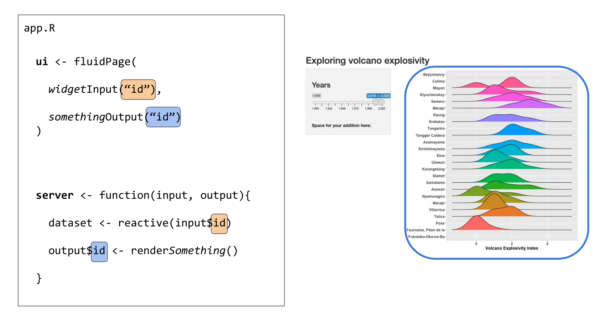
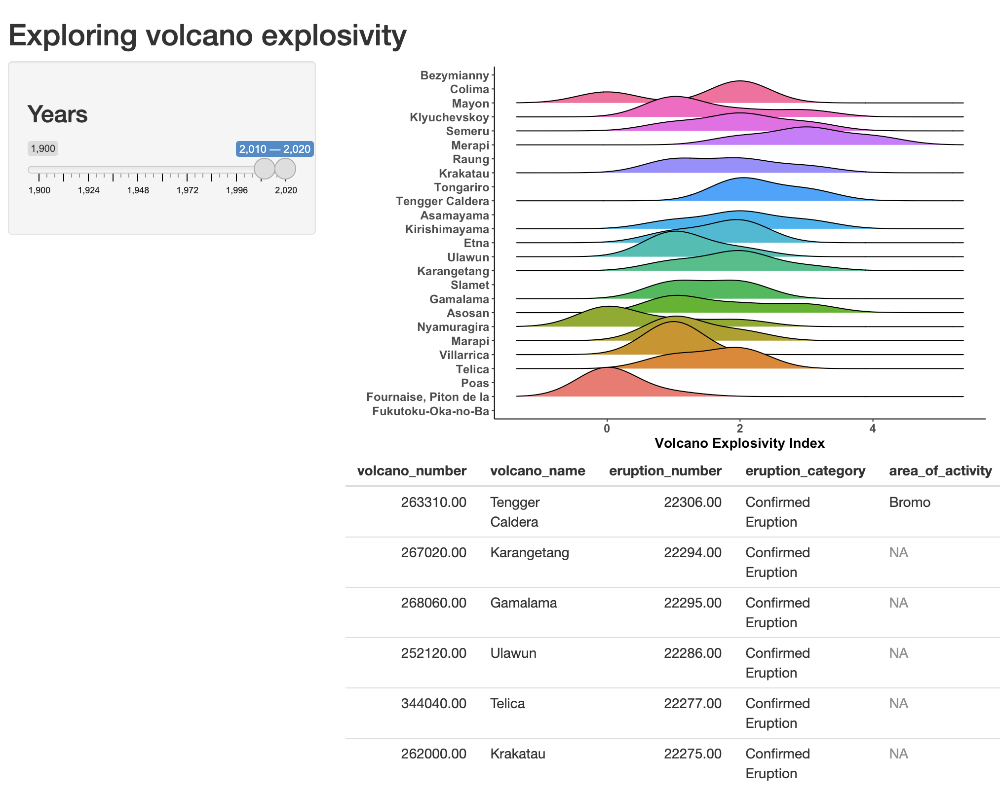
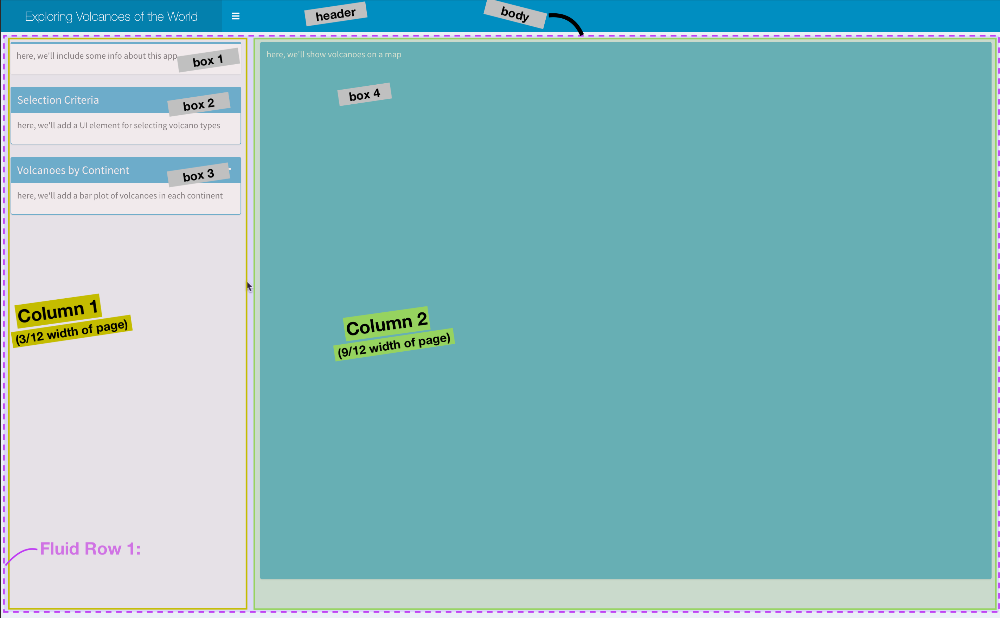
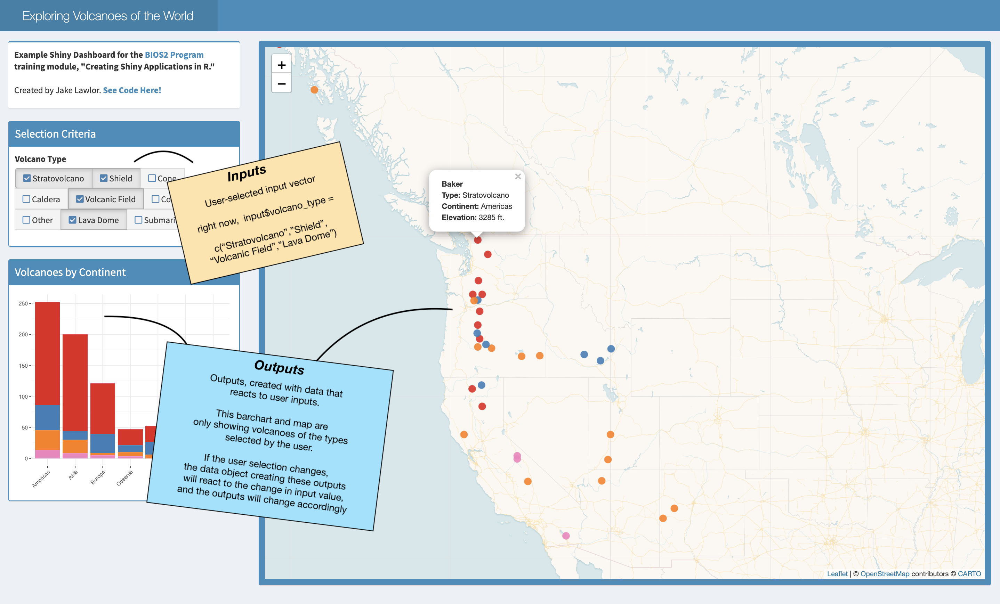
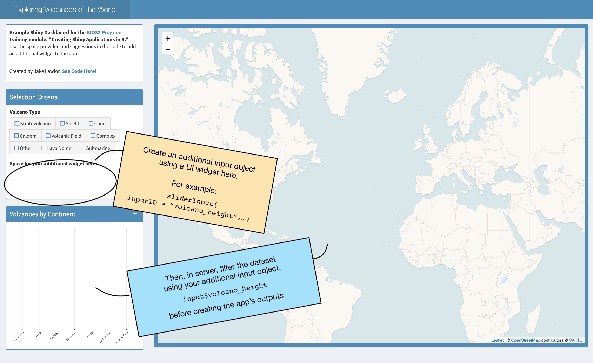
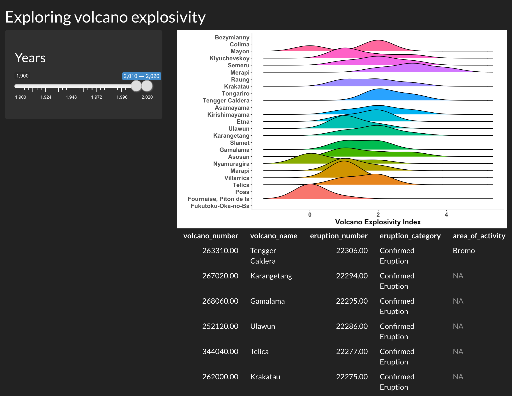
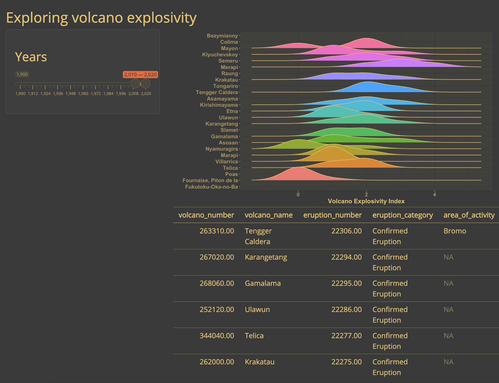
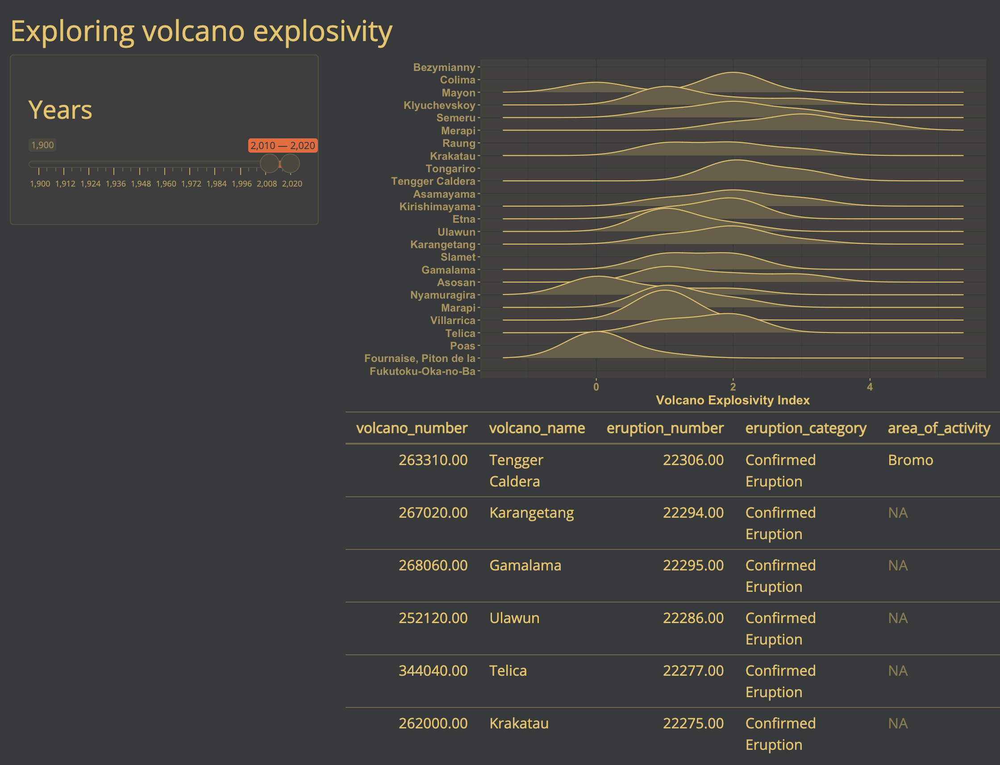

## read in the data
intra_list <- readr::read_rds(here::here("posts/2025-07-06-CSEE-intro-shiny/intra-list_clean.RDS"))
## what type of object are the data are stored in?
class(intra_list)[1] "list"There are many reasons to consider using Shiny for a project:
To ease into things, we will familiarize ourselves with the data that we will use to create a Shiny app together. At the same time, we will practice indexing lists, plotting, and making functions. By the end of this section, we will have made a plot that we will add interactivity to using Shiny.
We will be using a dataset on networks of scientific collaboration within the ecology and evolution departments of 25 Canadian universities. For each university, we have a count of the number of co-authored publications between each pair of ecology and evolution professors.
Lucas Eckert has kindly provided us with this data, and will be giving a talk on patterns of collaboration on Wednesday July 9th at 4:00pm (don’t miss it!).
Let’s explore the data:
## read in the data
intra_list <- readr::read_rds(here::here("posts/2025-07-06-CSEE-intro-shiny/intra-list_clean.RDS"))
## what type of object are the data are stored in?
class(intra_list)[1] "list"As you can see, the data are stored in a list object.
In our data list, each element of the list stores the collaboration network within one university, and the names attribute tells which university.
Try indexing data to get the collaboration network for McGill University. What is the shape of the resulting dataset? (list, matrix, data frame, vector etc)
## get the names of elements on our list
names(intra_list) [1] "Carleton University" "Dalhousie University"
[3] "McGill University" "McMaster University"
[5] "Memorial University of Newfoundland" "Queen's University"
[7] "Simon Fraser University" "Trent University"
[9] "Université de Montréal" "Université du Québec à Montréal"
[11] "Université du Québec à Rimouski" "Université Laval"
[13] "University of Alberta" "University of British Columbia"
[15] "University of Calgary" "University of Guelph"
[17] "University of Manitoba" "University of New Brunswick"
[19] "University of Ottawa" "University of Saskatchewan"
[21] "University of Toronto" "University of Victoria"
[23] "University of Waterloo" "University of Western Ontario"
[25] "University of Windsor" ## access element containing data for McGill University
network <- intra_list[['McGill University']]
network[1:5, 1:5] abouheif_ehab_mcgill barrett_rowan_mcgill
abouheif_ehab_mcgill 0 0
barrett_rowan_mcgill 0 0
bell_graham_mcgill 0 4
bennett_elena_mcgill 0 0
boivin_guy_mcgill 0 0
bell_graham_mcgill bennett_elena_mcgill boivin_guy_mcgill
abouheif_ehab_mcgill 0 0 0
barrett_rowan_mcgill 4 0 0
bell_graham_mcgill 0 0 0
bennett_elena_mcgill 0 0 0
boivin_guy_mcgill 0 0 0Let’s look at the format of the list elements:
## view the data:
View(network)Each university collaboration network is represented by a 2D matrix (similar to one used to represent species interaction networks) where rows and columns represent researchers and cells contain the number of shared publications between two researchers.
Our shiny app will feature visualizations of this dataset. Here is a short introduction to plotting in ggplot2, followed by a demonstration of a network plot using ggraph.
We are going to be using functions from the ggplot2 package to create visualizations of data. Functions are predefined bits of code that automate more complicated actions. R itself has many built-in functions, but we can access many more by loading other packages of functions and data into R.
If you don’t yet have this package installed, run this line of code:
install.packages("ggplot2")And load the package using the library() function:
# load package
library(ggplot2)Let’s also load a dataset to practice making a plot with:
data("penguins")knitr::kable(head(penguins))| species | island | bill_len | bill_dep | flipper_len | body_mass | sex | year |
|---|---|---|---|---|---|---|---|
| Adelie | Torgersen | 39.1 | 18.7 | 181 | 3750 | male | 2007 |
| Adelie | Torgersen | 39.5 | 17.4 | 186 | 3800 | female | 2007 |
| Adelie | Torgersen | 40.3 | 18.0 | 195 | 3250 | female | 2007 |
| Adelie | Torgersen | NA | NA | NA | NA | NA | 2007 |
| Adelie | Torgersen | 36.7 | 19.3 | 193 | 3450 | female | 2007 |
| Adelie | Torgersen | 39.3 | 20.6 | 190 | 3650 | male | 2007 |
ggplot2 is a powerful package that allows you to create complex plots from tabular data (data in a table format with rows and columns). The gg in ggplot2 stands for “grammar of graphics”, and the package uses consistent vocabulary to create plots of widely varying types. Therefore, we only need small changes to our code if the underlying data changes or we decide to make a box plot instead of a scatter plot. This approach helps you create publication-quality plots with minimal adjusting and tweaking.
ggplot plots are built step by step by adding new layers, which allows for extensive flexibility and customization of plots.
We use the ggplot() function to create a plot. In order to tell it what data to use, we need to specify the data argument. An argument is an input that a function takes, and you set arguments using the = sign.
ggplot(data = penguins)
We get a blank plot because we haven’t told ggplot() which variables we want to correspond to parts of the plot. We do this using the mapping argument. We can specify the “mapping” of variables to plot elements, such as x/y coordinates, size, or shape, by using the aes() function.
ggplot(data = penguins, mapping = aes(x = bill_len, y = bill_dep))
Now we’ve got a plot with x and y axes corresponding to variables from the iris data. However, we haven’t specified how we want the data to be displayed. We do this using geom_ functions, which specify the type of geometry we want, such as points, lines, or bars. We can add a geom_point() layer to our plot by using the + sign. We indent onto a new line to make it easier to read, and we have to end the first line with the + sign.
ggplot(data = penguins, mapping = aes(x = bill_len, y = bill_dep)) +
geom_point()Warning: Removed 2 rows containing missing values or values outside the scale range
(`geom_point()`).
We want our app to display the collaboration network for a university that the user of our Shiny app will select, so let’s start by making a plot of the collaboration network for McGill University.
ggplot likes tidy data, where each row of the data is an observation and each column represents different variables describing that observation. Because our network data are not in this format, we need the help of another package called package to plot them. Let’s install and load it:
# install.packages("tidygraph")
library(tidygraph)
Attaching package: 'tidygraph'The following object is masked from 'package:stats':
filterlibrary(ggraph)
# Create graph
graph <- as_tbl_graph(intra_list[["McGill University"]]) |>
mutate(degree = centrality_degree(mode = 'in'))
# plot using ggraph
ggraph(graph, layout = 'circle') +
geom_edge_fan(aes(alpha = after_stat(index)), show.legend = FALSE) +
geom_node_point(aes(size = degree)) +
theme_graph(foreground = 'steelblue',
fg_text_colour = 'white')
If we only had one university’s network to plot, we could stop here… but we have 24 others to plot. Let’s wrap our code in a function so that we can repeat several operations with a single command.
You can write your own functions in order to make repetitive operations using a single command. Let’s start by defining our function plot_network and the input parameter(s) that the user will feed to the function. Afterwards you will define the operation that you desire to program in the body of the function within curly braces { }. Finally, you need to assign the result (or output) of your function in the return() statement.
plot_network <- function(university, network_list) {
# ~~~~ operations to make our plot ~~~~~ #
return()
}Write a function called plot_network. Our function will take two arguments: university (a string defining the name of the university to plot) and network_list (the list of collaboration networks). In the body of the function, we will index the network_list to obtain the matrix of collaborations for the university.
plot_network <- function(university, network_list) {
## index the network list for the selected university
matrix <- network_list[[university]]
return()
}Using what you know about the arguments it needs, call the function to make a plot of Trent University’s collaboration network.
plot_network <- function(university, network_list) {
## index the network list for the selected university
one_uni_matrix = network_list[[university]]
graph <- as_tbl_graph(one_uni_matrix) |>
mutate(degree = centrality_degree(mode = 'in'))
# plot using ggraph
one_uni_plot <- ggraph(graph, layout = 'circle') +
geom_edge_fan(aes(alpha = after_stat(index)), show.legend = FALSE) +
geom_node_point(aes(size = degree)) +
theme_graph(foreground = 'steelblue',
fg_text_colour = 'white')
return(one_uni_plot)
}## call the function
plot_network(university = "Trent University", network_list = intra_list)
Shiny can be useful for performing calculations. However we can reduce the complexity of our app by performing calculations beforehand and simply using Shiny to subset and display the results.
We have a database of summary statistics that Lucas calculated using the collaboration dataset:
stats <- readr::read_rds(here::here(
"posts/2025-07-06-CSEE-intro-shiny/intra-stats_clean.RDS"
))
knitr::kable(head(stats))| inst | n_pi | mean_collab_prop | mean_degree |
|---|---|---|---|
| Carleton University | 21 | 0.1289936 | 1.7142857 |
| Dalhousie University | 34 | 0.1646219 | 1.1764706 |
| McGill University | 42 | 0.1558925 | 4.0476190 |
| McMaster University | 11 | 0.0605210 | 0.5454545 |
| Memorial University of Newfoundland | 31 | 0.1212651 | 1.4838710 |
| Queen’s University | 24 | 0.1552643 | 1.8333333 |
Let’s make a simple function which returns a table of summary statistics for just one chosen university:
make_stat_table <- function(university, stats_dataframe){
## get stats for the chosen school
df <- stats_dataframe[which(stats_dataframe$inst == university),]
## reformat the data frame
new_df <- data.frame(
Statistic = c("Number of P.I.s", "Mean collab prop", "Mean degree"),
Value = c(df$n_pi, df$mean_collab_prop, df$mean_degree)
)
## display table
return(new_df)
}
make_stat_table("Trent University", stats_dataframe = stats) Statistic Value
1 Number of P.I.s 19.0000000
2 Mean collab prop 0.2722764
3 Mean degree 2.4210526With these tools, we’re ready to start building a Shiny app!
Here is a minimal Shiny app which displays the collaboration dataset.
library(shiny)
library(tidygraph)
library(ggraph)
library(ggplot2)
library(tidyverse)
## read in Lucas's data
intra_list <- readRDS("intra-list_clean.RDS")
## it is a list with 25 elements containing the data for each of the 25 Canadian universities with the most eco/evo PIs
## each element is a matrix where each node is a PI who received an NSERC discovery grant through the ecology and evolution stream between 2013-22
## each edge in the matrix represents the number of co-authored publications between each PI
## read in an extra data frame of summary statistics about each university
stats <- readRDS("intra-stats_clean.RDS")
## n_pi = number of PIs who received an NSERC discovery grants
## mean_collab_prop = mean of the proportions of each’s researchers publications that come from intra-institution collaborations
## mean_degree = mean number of collaborators
plot_network <- function(university, network_list) {
## index the network list for the selected university
one_uni_matrix = network_list[[university]]
graph <- as_tbl_graph(one_uni_matrix) |>
mutate(degree = centrality_degree(mode = 'in'))
# plot using ggraph
one_uni_plot <- ggraph(graph, layout = 'circle') +
geom_edge_fan(aes(alpha = after_stat(index)), show.legend = FALSE) +
geom_node_point(aes(size = degree)) +
theme_graph(foreground = 'steelblue',
fg_text_colour = 'white')
return(one_uni_plot)
}
make_stat_table <- function(university, stats_dataframe){
## get stats for the chosen school
df <- stats_dataframe[which(stats_dataframe$inst == university),]
## reformat the data frame
new_df <- data.frame(
Statistic = c("Number of P.I.s", "Mean collab prop", "Mean degree"),
Value = c(df$n_pi, df$mean_collab_prop, df$mean_degree)
)
## display table
return(new_df)
}
ui <- fluidPage(
## write title for app:
titlePanel("Intra-university collaboration networks"),
## add a dropdown menu where user can select a university
selectInput(
inputId = "dropdown_input",
label = "Choose a school:",
choices = names(intra_list)
),
## display network plot for chosen university
plotOutput("schoolPlot"),
## display some stats for the chosen university
tableOutput("schoolStats")
)
# Define server logic required to draw a histogram
server <- function(input, output) {
## define plot output
output$schoolPlot <- renderPlot({
## get the chosen school from input into dropdown menu
choice = input$dropdown_input
## display network plot for the school that was chosen
plot_network(university = choice, network_list = intra_list)
})
## display some statistics for the chosen school
output$schoolStats <- renderTable({
## get the chosen school from input into dropdown menu
choice = input$dropdown_input
make_stat_table(university = choice, stats_dataframe = stats)
})
}
## run the app
shinyApp(ui = ui, server = server)Before we walk through the structure of a Shiny app, take a moment to look at the code above. We’ll each take some time to Think about the code and guess at what it does. Then we’ll encourage you to turn to your neighbours (Pair) and to discuss what you think the app does, and what it looks like (Share). Consider the following questions as you work through this exercise.
We’ve now seen the basic building blocks of a Shiny app:
The user interface and server communicate through IDs that we assign to inputs from the user and outputs from the server.


We use an ID (in orange) to link the user input in the UI to the reactive values used in the server:

We use another ID (in blue) to link the output created in the server to the output shown in the user interface:

These elements can all be placed in one script named app.R or separately in scripts named ui.R and server.R. The choice is up to you, although it becomes easier to work in separate ui.R and server.R scripts when the Shiny app becomes more complex.
Example 1: Everything in app.R
 Example 2: Split things into
Example 2: Split things into ui.R and server.R

Shiny is an excellent tool for visual exploration - it is at its most useful when a user can see something change before their eyes according to some selections. This is a great way to allow users to explore a dataset, explore the results of some analyses according to different parameters, and so on!
Let’s now add a plot to our Shiny app, to visualize the distribution of a variable depending on user input. We’ll be adding the ggplot2 and ggridges packages in the set-up step at the top of our app.R to allow us to make a plot.
# load packages
library(shiny)
library(ggridges)
library(ggplot2)
library(here)here() starts at C:/Users/Utilisateur/Documents/projects/bios2.github.iolibrary(readr)To add a plot in our Shiny, we need to indicate where the plot should appear in the app. We can do this with plotOutput(), a similar function to tableOutput() in the previous section that is meant for plot outputs, as the name suggests.
# Define UI for application that makes a table andplots the Volcano Explosivity
# Index for the most eruptive volcanoes within a selected range of years
ui <- fluidPage(
# Application title ----
titlePanel("Exploring volcano explosivity"),
# Input interface ----
sidebarLayout(
sidebarPanel(
# Sidebar with a slider range input
sliderInput("years", # the id your server needs to use the selected value
label = h3("Years"),
min = 1900, max = 2020, # maximum range that can be selected
value = c(2010, 2020) # this is the default slider position
)
)
),
# Show the outputs from the server ---------------
mainPanel(
# Show a ridgeplot of explosivity index for selected volcanoes
plotOutput("ridgePlot"),
# then, show the table we made in the previous step
tableOutput("erupt_table")
)
)Now our Shiny app knows where we want to place our plot.
We now need to create the plot we want to show in our app. This plot will change depending on one or several reactive values that the user can input or select in our UI.
We link the UI and server together with IDs that are assigned to each object. Above, we told the UI to expect a plot output with the ID "ridgePlot". In the server, we will create a plot and render it as a plot object using renderPlot(), and we will assign this plot output to the ID we call in the UI (as output$ridgePlot).
# Define server logic required to make your output(s)
server <- function(input, output) {
# prepare the data
# ----------------------------------------------------------
# read the dataset
eruptions <- readr::read_rds(here::here("data", "eruptions.rds"))
# filter the dataset to avoid overloading the plot
eruptions <- eruptions[which(eruptions$volcano_name %in% names(which(table(eruptions$volcano_name) > 30))),]
# this subsets to volcanoes that have erupted more than 30 times
# make reactive dataset
# ----------------------------------------------------------
# subset volcano data with input year range
eruptions_filtered <- reactive({
subset(eruptions, start_year >= input$years[1] & end_year <= input$years[2])
})
# create and render the outputs
# ----------------------------------------------------------
# create the table of volcanoes
output$erupt_table <- renderTable({
head(eruptions_filtered())
})
# render the plot output
output$ridgePlot <- renderPlot({
# create the plot
ggplot(data = eruptions_filtered(),
aes(x = vei,
y = volcano_name,
fill = volcano_name)) +
# we are using a ridgeplot geom here, from the ggridges package
geom_density_ridges( size = .5) + # line width
# label the axes
labs(x = "Volcano Explosivity Index", y = "") +
# adjust the ggplot theme to make the plot "prettier"
theme_classic() +
theme(legend.position = "none",
axis.text = element_text(size = 12, face = "bold"),
axis.title = element_text(size = 14, face = "bold"))
})
}Now, if we run the Shiny app, we have a plot above the table we made previously. They are positioned in this way because the plotOutput() comes before the tableOutput() in the UI.
# Run the application
shinyApp(ui = ui, server = server)
Here, we will use shiny extension shinyDashboards to construct a custom Shiny App to visualize the collaboration dataset. First, we need a few additional packages.
# load packages
library(shiny)
library(shinydashboard) # dashboard layout package
Attaching package: 'shinydashboard'The following object is masked from 'package:graphics':
boxlibrary(dplyr)
Attaching package: 'dplyr'The following objects are masked from 'package:stats':
filter, lagThe following objects are masked from 'package:base':
intersect, setdiff, setequal, unionlibrary(ggplot2)We will create our app using defaults from the ShinyDashboard package, which always includes three main components: a header, using dashboardHeader(), a sidebar, using dashboardSidebar(), and a body, using dashboardBody(). These are then added together using the dashboardPage() function.
Building these elements is less like usual R coding, and more like web design, since we are, in fact, designing a unser interface for a web app. Here, we’ll make a basic layout before populating it.
# create the header of our app
header <- dashboardHeader(
title = "Exploring Collaborations",
titleWidth = 350 # since we have a long title, we need to extend width element in pixels
)
# create dashboard body - this is the major UI element
body <- dashboardBody(
# make first row of elements (actually, this will be the only row)
fluidRow(
# make first column, 25% of page - width = 3 of 12 columns
column(width = 3,
# Box 1: text explaining what this app is
#-----------------------------------------------
box( width = NULL,
status="primary", # this line can change the automatic color of the box.
title = NULL,
p("here, we'll include some info about this app")
), # end box 1
# box 2 : input for selecting University
#-----------------------------------------------
box(width = NULL, status = "primary",
title = "Selection Criteria", solidHeader = TRUE,
p("here, we'll add a UI element for selecting the University"),
), # end box 2
# box 3: Table of
#------------------------------------------------
box(width = NULL, status = "primary",
solidHeader = TRUE, collapsible = T,
title = "Summary Statistics",
p("here, we'll add a table of summary stats for the chosen University")
) # end box 3
), # end column 1
# second column - 75% of page (9 of 12 columns)
#--------------------------------------------------
column(width = 9,
# Box 4: ggplot2 figure
box(width = NULL, background = "light-blue", height = 850,
p("a ggplot of the network within one University"),
) # end box with map
) # end second column
) # end fluidrow
) # end body
# add elements together
dashboardPage(
skin = "blue",
header = header,
sidebar = dashboardSidebar(disable = TRUE), # here, we only have one tab of our app, so we don't need a sidebar
body = body
)
Now, we are going to fill out app with elements. In this app, we will only have one user input: a selection of the volcano type to show. We will use this input (input$volcano_type), which will be used to filter data in the server (i.e. make a smaller dataset using only volcanoes of the selected types), then use this filtered dataset to create output elements (plots and maps).
Below, we show the necessary code to include in both the UI and the Server to create each plot element. Notice that after the reactive value selected_volcanoes is created in the selection box, this is the only object that is used to create the other elements in the app.
| Location | Element | UI | Server |
|---|---|---|---|
| Box 1 | Intro Textbox | Markdown/HTML text code | |
| Box 2 | Selection Wigets | checkboxGroupButtons( inputID = "volcano_type") |
selected_volcanoes <- reactive({ volcano_df %>% filter(type %in% input$volcano_type)}) to create a filtered dataset that will react to user input |
| Box 3 | Bar Graph | plotOutput("continentplot") |
output$continentplot <- renderPlot(...)) which will plot from the selectied_volcanoes reactive object |
| Box 4 | Leaflet Map | leafletOutput("volcanomap") |
output$volcanomap <- renderLeaflet(...) to map points from the selectied_volcanoes reactive object |

Use the code provided to add your own additional user input to the Shiny App. The code (which you can access here leaves a space for an additional UI input inside box 2). Then, you’ll need to use your new input element to the reactive value in the Server, as noted in the server code.
Use the Default Shiny Widgets or shinyWidgets extended package galleries to explore the types of elements you can add.

See our completed app HERE
knitr::opts_chunk$set(eval = FALSE)If you’d like to go one step further, you can also customize the appearance of your Shiny app using built-in themes, or creating your own themes.
There are several built-in themes in Shiny, which allow you to quickly change the appearance of your app. You can browse a gallery of available themes here here, or test themes out interactively here.
Let’s try the darkly theme on our Shiny app. To do this, we will need the shinythemes package.
library(shinythemes)We can change the theme of our previous app with one line of code:
# Define UI for application that makes a table andplots the Volcano Explosivity
# Index for the most eruptive volcanoes within a selected range of years
ui <- fluidPage(
# Application title ----
titlePanel("Exploring volcano explosivity"),
# Input interface ----
sidebarLayout(
sidebarPanel(
# Sidebar with a slider range input
sliderInput("years", # the id your server needs to use the selected value
label = h3("Years"),
min = 1900, max = 2020, # maximum range that can be selected
value = c(2010, 2020) # this is the default slider position
)
)
),
# Show the outputs from the server ---------------
mainPanel(
# Show a ridgeplot of explosivity index for selected volcanoes
plotOutput("ridgePlot"),
# then, show the table we made in the previous step
tableOutput("erupt_table")
),
# Customize the theme ----------------------
# Use the darkly theme
theme = shinythemes::shinytheme("darkly")
)Now, if we run the app, it looks a little different:

You can also go beyond the built-in themes, and create your own custom theme with the fonts and colours of your choice. You can also apply this theme to the outputs rendered in the app, to bring all the visuals together for a more cohesive look.
To create a custom theme, we will be using the bs_theme() function from the bslib package.
library(bslib)# Create a custom theme
cute_theme <- bslib::bs_theme(
bg = "#36393B", # background colour
fg = "#FFD166", # most of the text on your app
primary = "#F26430", # buttons, ...
# you can also choose fonts
base_font = font_google("Open Sans"),
heading_font = font_google("Open Sans")
)To apply this theme to our Shiny app (and the outputs), we will be using the thematic package.
library(thematic)There are two essential steps to apply a custom theme to a Shiny app:
cute_theme).# Activate thematic
# so your R outputs will be changed to match up with your chosen styling
thematic::thematic_shiny()
# Define UI for application that makes a table andplots the Volcano Explosivity
# Index for the most eruptive volcanoes within a selected range of years
ui <- fluidPage(
# Application title ----
titlePanel("Exploring volcano explosivity"),
# Input interface ----
sidebarLayout(
sidebarPanel(
# Sidebar with a slider range input
sliderInput("years", # the id your server needs to use the selected value
label = h3("Years"),
min = 1900, max = 2020, # maximum range that can be selected
value = c(2010, 2020) # this is the default slider position
)
)
),
# Show the outputs from the server ---------------
mainPanel(
# Show a ridgeplot of explosivity index for selected volcanoes
plotOutput("ridgePlot"),
# then, show the table we made in the previous step
tableOutput("erupt_table")
),
# Customize the theme ----------------------
# Use our custom theme
theme = cute_theme
)Now, if we run the app, the user interface and plot theme is set to the colours and fonts we set in cute_theme:

Here, thematic is not changing the colours used to represent a variable in our plot, because this is an informative colour scale (unlike the colour of axis labels, lines, and the plot background). However, if we remove this colour variable in our ridgeplot in the server, thematic will change the plot colours as well. Here is a simplified example of our server to see what these changes would look like:
# Define server logic required to make your output(s)
server <- function(input, output) {
#... (all the good stuff we wrote above)
# render the plot output
output$ridgePlot <- renderPlot({
# create the plot
ggplot(data = eruptions_filtered(),
aes(x = vei,
y = volcano_name)) + # we are no longer setting
# the fill argument to a variable
# we are using a ridgeplot geom here, from the ggridges package
geom_density_ridges(size = .5) +
# label the axes
labs(x = "Volcano Explosivity Index", y = "") +
# remove the "classic" ggplot2 so it doesn't override thematic's changes
# theme_classic() +
theme(legend.position = "none",
axis.text = element_text(size = 12, face = "bold"),
axis.title = element_text(size = 14, face = "bold"))
})
}Now, our plot’s theme follows the app’s custom theme as well:

First step is creating your own golem project:

Golem provides you with some very helpful “workflow” scripts:
Edit the Description by filling in this function in 01_dev.R
Then, add all the dependencies
Together, this edits the DESCRIPTION of your R package to look something like this:
Now we can start building the app.
app_ui <- function(request) {
tagList(
# Leave this function for adding external resources
golem_add_external_resources(),
# Your application UI logic
shinydashboard::dashboardPage(
header = shinydashboard::dashboardHeader(
title = "Exploring Volcanoes of the World",
titleWidth = 350 # since we have a long title, we need to extend width element in pixels
),
sidebar = shinydashboard::dashboardSidebar(disable = TRUE), # here, we only have one tab, so we don't need a sidebar
body = shinydashboard::dashboardBody(
# make first row of elements (actually, this will be the only row)
fluidRow(
# make first column, 25% of page - width = 3 of 12 colums
column(width = 3,
# box 1 : input for selecting volcano type
#-----------------------------------------------
shinydashboard::box(width = NULL, status = "primary",
title = "Selection Criteria", solidHeader = T
## CHECKBOX HERE
), # end box 1
# box 2: ggplot of selected volcanoes by continent
#------------------------------------------------
shinydashboard::box(width = NULL, status = "primary",
solidHeader = TRUE, collapsible = T,
title = "Volcanoes by Continent"
## PLOT HERE
) # end box 2
), # end column 1
# second column - 75% of page (9 of 12 columns)
column(width = 9,
# Box 3: leaflet map
shinydashboard::box(width = NULL, background = "light-blue"
## MAP HERE
) # end box with map
) # end second column
) # end fluidrow
) # end body
)
)
}This indicates where each of the three components of the app would go.
At this point we can run the app to get a very empty-looking UI:

We could split this app into three different sections, corresponding to each of the three boxes:
#' volcano_select UI Function
#'
#' @description A shiny Module.
#'
#' @param id,input,output,session Internal parameters for {shiny}.
#'
#' @noRd
#'
#' @importFrom shiny NS tagList
mod_volcano_select_ui <- function(id){
ns <- NS(id)
tagList(
# Widget specifying the species to be included on the plot
shinyWidgets::checkboxGroupButtons(
inputId = ns("volcano_type"),
label = "Volcano Type",
choices = c("Stratovolcano" , "Shield" ,"Cone" , "Caldera" , "Volcanic Field",
"Complex" , "Other", "Lava Dome" , "Submarine" ),
checkIcon = list(
yes = tags$i(class = "fa fa-check-square",
style = "color: steelblue"),
no = tags$i(class = "fa fa-square-o",
style = "color: steelblue"))
) # end checkboxGroupButtons
)
}
#' volcano_select Server Functions
#'
#' @noRd
mod_volcano_select_server <- function(id, volcano){
moduleServer( id, function(input, output, session){
ns <- session$ns
# make reactive dataset
# ------------------------------------------------
# Make a subset of the data as a reactive value
# this subset pulls volcano rows only in the selected types of volcano
selected_volcanoes <- reactive({
req(input$volcano_type)
volcano %>%
# select only volcanoes in the selected volcano type (by checkboxes in the UI)
dplyr::filter(volcano_type_consolidated %in% input$volcano_type) %>%
# Space to add your suggested filter here!!
# --- --- --- --- --- --- --- --- --- --- --- --- ---
# filter() %>%
# --- --- --- --- --- --- --- --- --- --- --- --- ---
# change volcano type into factor (this makes plotting it more consistent)
dplyr::mutate(volcano_type_consolidated = factor(volcano_type_consolidated,
levels = c("Stratovolcano" , "Shield", "Cone", "Caldera", "Volcanic Field",
"Complex" , "Other" , "Lava Dome" , "Submarine" ) ) )
})
})
}
## To be copied in the UI
# mod_volcano_select_ui("volcano_select_1")
## To be copied in the server
# mod_volcano_select_server("volcano_select_1")I also like to test my modules by using them to create a toy Shiny app. The best place to do this is by using a testthat directory. This is another great advantage of using a package workflow. You can set this up easily with usethis::use_test(): just run usethis::use_test from the R console when you have the module open.
Then write a simple test like this
test_that("volcano selection module works", {
testthat::skip_if_not(interactive())
ui <- fluidPage(
## To be copied in the UI
mod_volcano_select_ui("volcano_select_1"),
tableOutput("table")
)
server <- function(input, output) {
## To be copied in the server
volcano_data <- readRDS("data/volcanoes.rds")
selected_data <- mod_volcano_select_server("volcano_select_1",
volcano = volcano_data)
output$table <- renderTable(selected_data())
}
shinyApp(ui = ui, server = server)
})Which generates the following simple app:

#' continentplot UI Function
#'
#' @description A shiny Module.
#'
#' @param id,input,output,session Internal parameters for {shiny}.
#'
#' @noRd
#'
#' @importFrom shiny NS tagList
mod_continentplot_ui <- function(id){
ns <- NS(id)
tagList(
plotOutput(ns("barplot"), # this calls to object continentplot that is made in the server page
height = 350)
)
}
#' continentplot Server Functions
#'
#' @noRd
mod_continentplot_server <- function(id, volcano, selected_volcanoes){
# kind of helpful
stopifnot(is.reactive(selected_volcanoes))
moduleServer( id, function(input, output, session){
ns <- session$ns
output$barplot <- renderPlot({
# create basic barplot
barplot <- ggplot2::ggplot(data = volcano,
ggplot2::aes(x=continent,
fill = volcano_type_consolidated))+
# update theme and axis labels:
ggplot2::theme_bw()+
ggplot2::theme(plot.background = ggplot2::element_rect(color="transparent",fill = "transparent"),
panel.background = ggplot2::element_rect(color="transparent",fill="transparent"),
panel.border = ggplot2::element_rect(color="transparent",fill="transparent"))+
ggplot2::labs(x=NULL, y=NULL, title = NULL) +
ggplot2::theme(axis.text.x = ggplot2::element_text(angle=45,hjust=1))
# IF a selected_volcanoes() object exists, update the blank ggplot.
# basically this makes it not mess up when nothing is selected
barplot <- barplot +
ggplot2::geom_bar(data = selected_volcanoes(), show.legend = F) +
ggplot2::scale_fill_manual(values = RColorBrewer::brewer.pal(9,"Set1"), drop=F) +
ggplot2::scale_x_discrete(drop=F)
# print the plot
barplot
}) # end renderplot command
})
}
## To be copied in the UI
# mod_continentplot_ui("continentplot_1")
## To be copied in the server
# mod_continentplot_server("continentplot_1")the test
test_that("volano barplot works", {
testthat::skip_if_not(interactive())
ui <- fluidPage(
## To be copied in the UI
mod_continentplot_ui("continentplot_1"),
tableOutput("table")
)
server <- function(input, output) {
## To be copied in the server
volcano_data <- readRDS("data/volcanoes.rds")
volcano_recent <- subset(volcano_data, last_eruption_year > 2000)
mod_continentplot_server("continentplot_1",
volcano = volcano_data,
selected_volcanoes = reactive(volcano_recent))
}
shinyApp(ui = ui, server = server)
})@online{moore2025,
author = {Moore, Nikki and MacDonald, Andrew and Lawlor, Jake},
title = {Introduction to {Shiny} {Apps} {CSEE}},
date = {2025-07-06},
url = {https://bios2.github.io/posts/2025-07-06-CSEE-intro-shiny},
langid = {en}
}